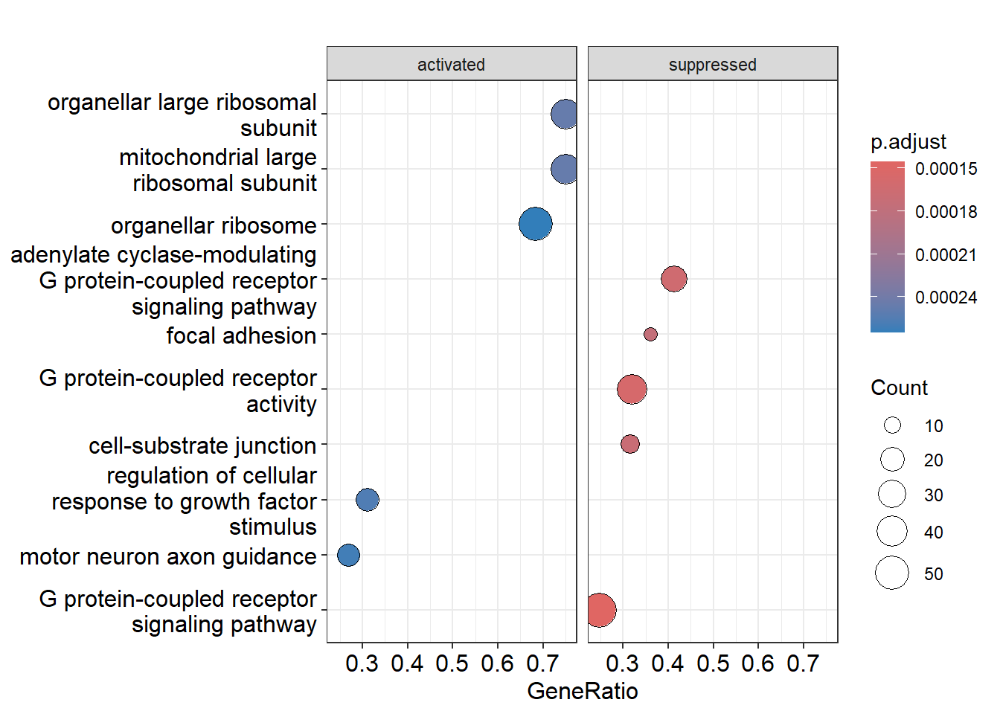
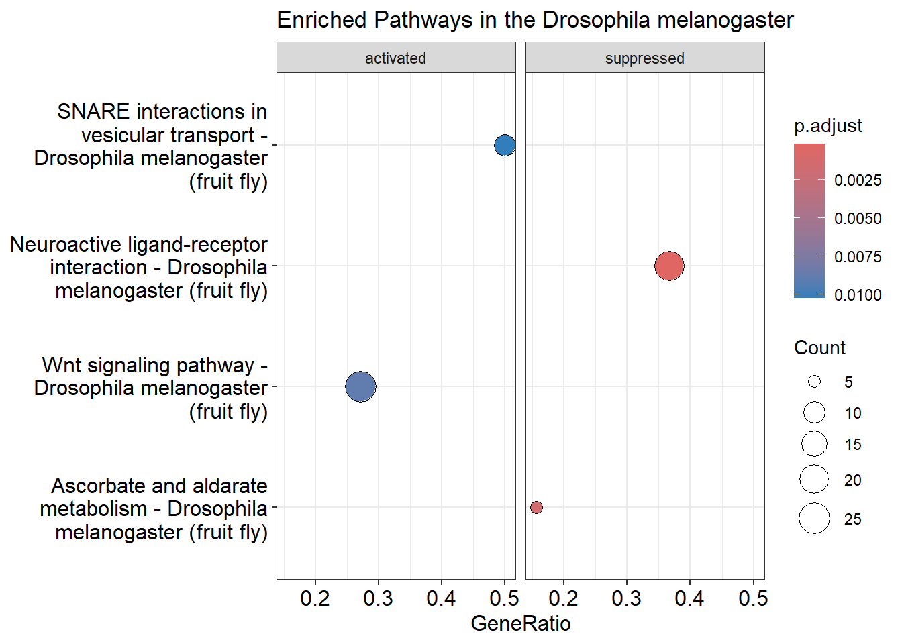
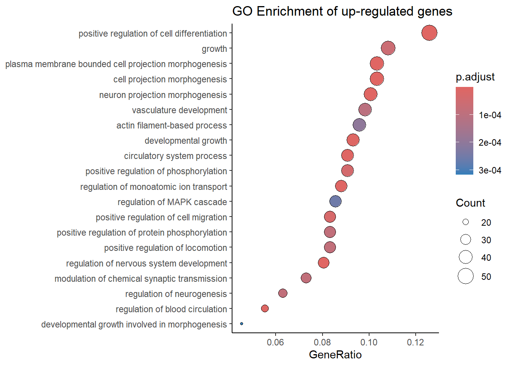
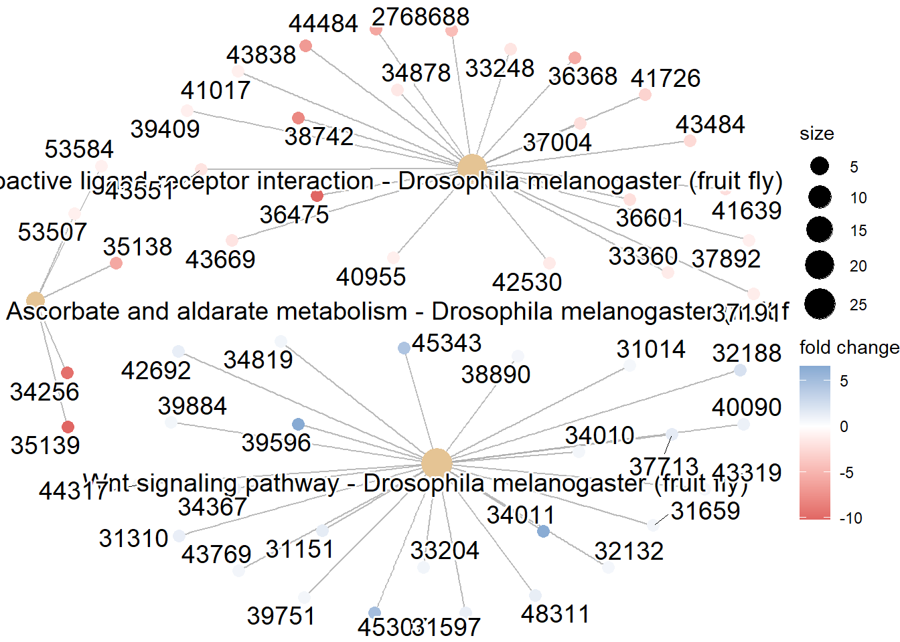
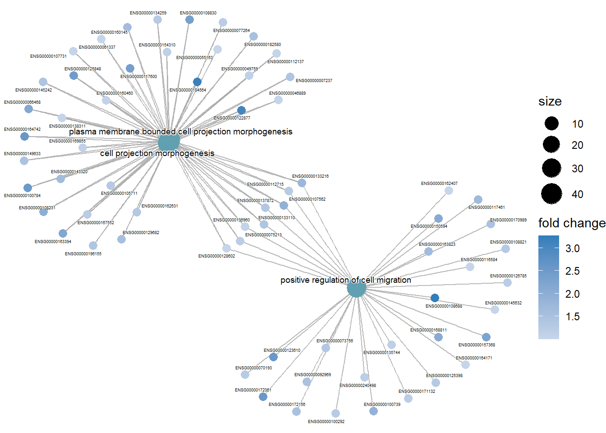
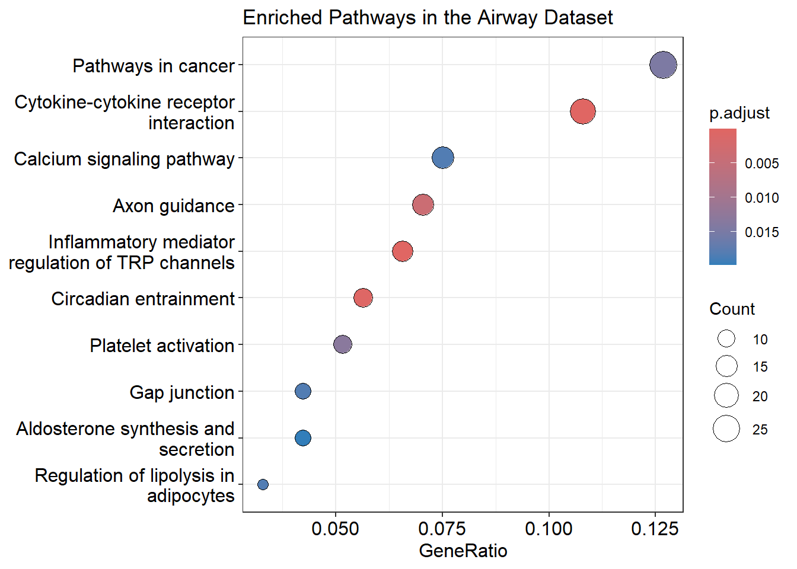
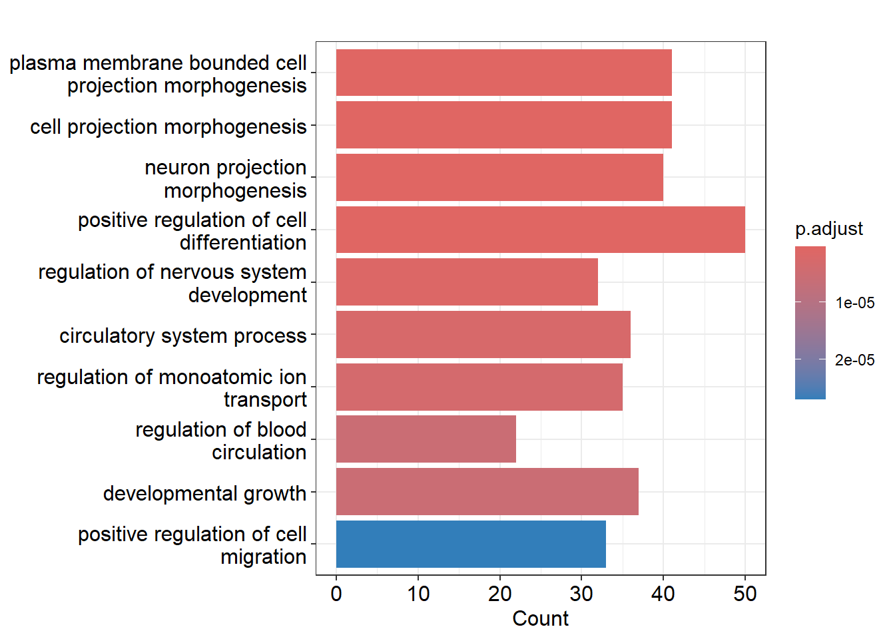

2 Pathway Analysis using ClusterProfile-R package
For my independent project, I am dedicating my time to learning a new skill: conducting pathway analysis. Understanding the molecular mechanisms underlying diseases is paramount for developing effective treatments.The plan is to experiment with KEGG pathway analysis to become proficient in utilizing Clusterprofile, the R-package through which pathway analysis will be conducted.
2.1 Datasets
I will apply KEGG pathway analysis to Drosophila melanogaster data (annotation data) and the airway data from Himes et al. (2014). In the study, researchers analyzed transcriptomic alterations in four primary human ASM cell lines exposed to dexamethasone, an asthma therapy. The airway package comprises RNAseq count data from 8 samples of airway smooth muscle cells. Each cell line consists of both treated and untreated negative controls. DESeq2 was employed to conduct differential expression analysis on this dataset.
2.2 My workflow
| Day | Activities |
|---|---|
| Day 1 |
|
| Day 2 |
|
| Day 3 |
|
| Day 4 |
|
2.3 Aim of this project
The aim is to acquire a new skill: conducting pathway analysis. For this, I need to master the Clusterprofiler package.
Learning clusterProfiler automates gene expression analysis with KEGG pathway enrichment, gene set enrichment, and over-representation analysis. Mastering it helps interpret complex datasets, crucial for understanding diseases like cancer.
2.4 Clusterprofiler package
The clusterProfiler package is a powerful tool for analyzing and interpreting gene expression data using the KEGG database. It includes features like KEGG enrichment analysis to identify biological pathways related to a specific condition. It also supports gene set enrichment analysis for KEGG terms, helping to find if certain biological functions are over-represented in a dataset.
The package offers over-representation analysis of KEGG modules, giving a structured view of biological processes. Visualization methods include browseKEGG to explore pathways in a browser and pathview to display them visually.
In short, clusterProfiler helps researchers understand gene expression data in the context of biological pathways, revealing insights into complex biological mechanisms.
Clusterprofiler also has several advantages:
- ORA and GSEA support
- Functionality for multiple ontology and pathway databases
- Allows user defined databases and annotations, which is particularly useful for non-model organisms
- Easily compare functional profiles between treatments integrates the tidy philosophy
- Complementary packages (ChIPseeker,GOSemSim, enrichplot, ReactomePA, DOSE) provide a comprehensive tool suite for understanding functional enrichment.
More information on Clusterprofiler can be found here: https://yulab-smu.top/biomedical-knowledge-mining-book/clusterprofiler-kegg.html.

(#fig:haha )Visualize the selected KEGG pathway using pathview(). Gene expression values can be assigned to a gradient color scale.
2.5 Diving deeper into Clusterprofiler…
As preparation on how to use the Clusterprofiler package to make a pathway analysis and to get an idea on the options this package has and I can use, I have the next overview:
Figure 2.1: Visualize the selected KEGG pathway using pathview(). Gene expression values can be assigned to a gradient color scale.
2.5.1 Supported analysis
As can been seen in figure 2.2, Clusterprofiler supports the following analysis:
- Over-Representation Analysis (ORA): Over-representation analysis (ORA) identifies biological pathways or functions that are disproportionately represented among differentially expressed genes. It determines if certain pathways have more genes than expected by chance. Alongside ORA and GSEA, KEGG pathway enrichment analysis can also be performed to identify and visualize enriched pathways.
2.Gene Set Enrichment Analysis (GSEA): Gene Set Enrichment Analysis (GSEA) checks if specific groups of genes show significant differences in expression between two conditions, helping identify important biological changes.
I am doing an over-representation analysis (ORA) with clusterProfiler for the airway study and GSEA for drosphilia annotated data.
2.6 ORA and GSEA with clusterProfiler steps
In short, the steps are:
1.Load the differential expression results (DE results) in the Deseq2 object: We need the results from the differential expression analysis to generate gene lists for further functional analysis. The results of these analysis is stored in a Deseq2 object. For GSEA and ORA this step is the same.
- Create gene list up and downregulated: Create different lists of genes based on their differential expression with associated log2 fold change values. To organize the genes into lists for specific analyses, such as up-regulated and down-regulated genes.
Function from clusterprofiler: bitr(). It can convert gene IDs.
- Perform GO enrichment analysis on up-regulated genes: Perform Gene Ontology (GO) enrichment analysis on the list of up-regulated genes. This is to understand which biological processes are influenced by the differentially expressed genes.
Function from clusterprofiler: enrichGO().
- Visualize GO enrichment results using a dotplot: Visualize the GO enrichment results using a dotplot and maybe another visualisation. To easily interpret and communicate the results of the GO enrichment analysis.
There are many visualisation options within Clusterprofiler that can be seen in figure 2.2. Some are specifically for GSEA or ORA, others can be used for both.
- Performing KEGG pathway Enrichment Analysis: Conduct KEGG pathway over-representation analysis to identify which KEGG pathways are significantly enriched in the list of differentially expressed genes.
Function from clusterprofiler: enrichKEGG().
- Visualize Enriched Pathways: Utilize interactive tools to explore enriched KEGG pathways to gain a deeper understanding of the pathway enrichment results in an interactive manner.
Function from clusterprofiler: browseKEGG(). An alternative to this is pathview(), by Luo and Brouwer (2013) from the pathview package, this does not belong to Clusterprofiler.
- Pathway gene enrichment analysis: Conducting a pathway gene set enrichment analysis.
Function from clusterprofiler: gseKEGG().
2.6.2 Installation
The installation of the Clusterprofiler package is described here.
2.6.3 Gathering data and annotations
I’m analyzing Drosophila melanogaster data, so I install and load the annotation package “org.Dm.eg.db” here. There are also other available annotations.
# Setting the organism (I chose fly for example )
organism = "org.Dm.eg.db"
#BiocManager::install(organism, character.only = TRUE)
library(organism, character.only = TRUE)Before diving into the analysis, we first need to prepare our input data. In this step, we’re reading in data obtained from differential expression analysis using DESeq2 named “drosphila_example_de.csv”, which includes important information such as log2 fold change values. This file contains the results of a differential gene expression analysis. I found this data specifically for the Drosophila melanogaster here.
2.6.4 Prepare Input for the GO term ontology enrichment analysis: Gene list
I want the log2 fold change values to use for the GO term enrichment later on, because these values tell if genes differentiate in gene expression. I also save the gene identifiers in a vector with their log2 fold change value.
# Reading in data from deseq2
drosphilia_data = read.csv("drosphila_example_de.csv", header=TRUE)
# I want the log2 fold change
original_gene_list <- drosphilia_data$log2FoldChange
# Assiging the gene names from the $X column of the drosophila_data dataset to the elements of the original_gene_list vector(log2 fold) to identify each gene
names(original_gene_list) <- drosphilia_data$X
# Remove the missing values
gene_list<-na.omit(original_gene_list)
# The list in decreasing order (a must for clusterProfiler)
gene_list = sort(gene_list, decreasing = TRUE)After preparing our input data, we proceed with gene set enrichment analysis to unravel biological insights from our dataset. Using the gseGO function, we identify enriched gene ontology (GO) terms associated with the differentially expressed genes.
2.6.5 GO term enrichment ontology analysis
Input data: Starting with a sorted list of genes based on log2 fold change values from the expression analysis.
Parameters:
keyType: We use ENSEMBL IDs to identify the genes. nPerm: The number of permutations set to 10,000 for more robust results. minGSSize and maxGSSize: Setting the minimum and maximum size of the gene sets. pvalueCutoff: We use a p-value cutoff of 0.05 to identify significant results.
Output: The top results are displayed using head(gene_set_enrichment), providing an overview of enriched GO terms.
## ONTOLOGY ID
## GO:0007186 BP GO:0007186
## GO:0004930 MF GO:0004930
## GO:0007188 BP GO:0007188
## GO:0030055 CC GO:0030055
## GO:0005925 CC GO:0005925
## GO:0004948 MF GO:0004948
## Description
## GO:0007186 G protein-coupled receptor signaling pathway
## GO:0004930 G protein-coupled receptor activity
## GO:0007188 adenylate cyclase-modulating G protein-coupled receptor signaling pathway
## GO:0030055 cell-substrate junction
## GO:0005925 focal adhesion
## GO:0004948 calcitonin receptor activity
## setSize enrichmentScore NES pvalue p.adjust
## GO:0007186 227 -0.5558057 -2.112194 0.0001454334 0.0001454334
## GO:0004930 113 -0.5809564 -2.016126 0.0001563477 0.0001563477
## GO:0007188 63 -0.6926563 -2.202946 0.0001635858 0.0001635858
## GO:0030055 38 -0.7017319 -2.030856 0.0001702128 0.0001702128
## GO:0005925 25 -0.7818698 -2.082121 0.0001761494 0.0001761494
## GO:0004948 5 -0.9714870 -1.780968 0.0001923817 0.0001923817
## qvalue rank leading_edge
## GO:0007186 0.09689952 885 tags=25%, list=6%, signal=24%
## GO:0004930 0.09689952 1016 tags=32%, list=7%, signal=30%
## GO:0007188 0.09689952 1344 tags=41%, list=9%, signal=38%
## GO:0030055 0.09689952 1342 tags=32%, list=9%, signal=29%
## GO:0005925 0.09689952 1157 tags=36%, list=8%, signal=33%
## GO:0004948 0.09689952 438 tags=100%, list=3%, signal=97%
## core_enrichment
## GO:0007186 FBgn0050361/FBgn0038880/FBgn0040506/FBgn0001104/FBgn0050340/FBgn0260446/FBgn0022710/FBgn0000253/FBgn0053639/FBgn0031275/FBgn0004842/FBgn0004573/FBgn0004622/FBgn0052547/FBgn0033932/FBgn0027794/FBgn0038140/FBgn0050106/FBgn0024944/FBgn0052683/FBgn0266137/FBgn0263131/FBgn0028956/FBgn0010223/FBgn0038653/FBgn0011582/FBgn0038542/FBgn0086704/FBgn0085380/FBgn0004784/FBgn0265959/FBgn0030437/FBgn0267252/FBgn0261953/FBgn0013767/FBgn0039396/FBgn0038980/FBgn0032048/FBgn0037976/FBgn0031302/FBgn0264002/FBgn0031770/FBgn0037408/FBgn0035092/FBgn0036260/FBgn0033744/FBgn0035385/FBgn0266429/FBgn0085413/FBgn0260753/FBgn0019985/FBgn0045038/FBgn0261549/FBgn0034636/FBgn0039419/FBgn0052843
## GO:0004930 FBgn0263116/FBgn0035331/FBgn0050361/FBgn0038880/FBgn0050340/FBgn0260446/FBgn0053639/FBgn0031275/FBgn0004842/FBgn0004573/FBgn0004622/FBgn0052547/FBgn0033932/FBgn0038140/FBgn0050106/FBgn0024944/FBgn0266137/FBgn0028956/FBgn0038653/FBgn0011582/FBgn0038542/FBgn0025680/FBgn0030437/FBgn0039396/FBgn0038980/FBgn0264002/FBgn0031770/FBgn0037408/FBgn0036260/FBgn0033744/FBgn0035385/FBgn0266429/FBgn0260753/FBgn0019985/FBgn0039419/FBgn0052843
## GO:0007188 FBgn0040507/FBgn0050054/FBgn0000037/FBgn0037546/FBgn0263116/FBgn0035331/FBgn0040506/FBgn0001104/FBgn0260446/FBgn0022710/FBgn0004573/FBgn0033932/FBgn0266137/FBgn0263131/FBgn0010223/FBgn0038653/FBgn0011582/FBgn0038542/FBgn0030437/FBgn0038980/FBgn0032048/FBgn0264002/FBgn0033744/FBgn0260753/FBgn0039419/FBgn0052843
## GO:0030055 FBgn0034540/FBgn0032683/FBgn0000464/FBgn0010395/FBgn0031850/FBgn0265991/FBgn0033987/FBgn0004397/FBgn0261574/FBgn0004456/FBgn0053993/FBgn0052406
## GO:0005925 FBgn0000464/FBgn0010395/FBgn0265991/FBgn0033987/FBgn0004397/FBgn0261574/FBgn0004456/FBgn0053993/FBgn0052406
## GO:0004948 FBgn0030437/FBgn0033744/FBgn0260753/FBgn0052843We can visualise the enriched GO terms with the dotplot() function within Clusterprofiler. Facet grid is used to split the two plots into two seperate panels. This makes it easier to compare patterns.

2.6.6 KEGG Gene Set Enrichment Analysis: What pathways are enriched?
To find KEGG pathways related to our genes using gseKEGG(), we first need to change how our gene identifiers are labeled. We do this with the bitr function in clusterProfiler. After this, we use our original gene list to start the analysis.
2.6.7 Prepare Input
Pseudocoding: - Convert ENSEMBL IDs to ENTREZ IDs. - Remove duplicate ENSEMBL IDs. - Select successfully mapped genes. - Add ENTREZ IDs to the selected genes. - Create a gene universe vector based on log2 fold change values. - Label the vector with ENTREZ IDs. - Remove NA values. - Sort the vector in decreasing order.
#Convert gene IDs for gseKEGG function
ids<-bitr(names(original_gene_list), fromType = "ENSEMBL", toType = "ENTREZID", OrgDb=organism)
# remove duplicate IDS (here I use "ENSEMBL")
dedup_ids = ids[!duplicated(ids[c("ENSEMBL")]),]
# Create a new dataframe df2 which has only the genes which were successfully mapped using the bitr function above
df2 = df[df$X %in% dedup_ids$ENSEMBL,]
# Create a new column in df2 with the corresponding ENTREZ IDs
df2$Y = dedup_ids$ENTREZID
# Create a vector of the gene unuiverse
kegg_gene_list <- df2$log2FoldChange
# Name vector with ENTREZ ids
names(kegg_gene_list) <- df2$Y
# remove any NA values
kegg_gene_list<-na.omit(kegg_gene_list)
# sort the list in decreasing order (required for clusterProfiler)
kegg_gene_list = sort(kegg_gene_list, decreasing = TRUE)Values: kegg_gene_list contains the log2 fold change values from the gene expression analysis. These values indicate how much the expression of each gene has changed.
Names: The kegg_gene_list vector is labeled with the corresponding ENTREZ IDs of the genes. This means that each value in the vector is linked to a specific gene, identified by its ENTREZ ID.
2.6.8 Create gseKEGG Object: What pathways are enriched?
The gseKEGG function evaluates the association between the kegg gene list and KEGG pathways and does so by making an object, the gseKEGG object. To create the gseKEGG object for our analysis, we need to set several parameters:
kegg_organism: This refers to the KEGG organism code, which consists of a three-letter code identifying the organism of interest. You can find the full list of KEGG organism codes here. We define this as kegg_organism initially because it will be used again later when generating pathview plots.
nPerm: This parameter determines the number of permutations used in the analysis. Increasing the number of permutations can improve the accuracy of results but will also increase computation time.
minGSSize: This sets the minimum size of each gene set for analysis.
maxGSSize: This sets the maximum size of genes annotated for testing.
pvalueCutoff: This parameter specifies the cutoff value for statistical significance.
pAdjustMethod: This determines the method used for adjusting p-values. Options include “holm”, “hochberg”, “hommel”, “bonferroni”, “BH”, “BY”, “fdr”, and “none”.
keyType: This parameter specifies the type of gene identifiers used in the analysis. Options include ‘kegg’, ‘ncbi-geneid’, ‘ncib-proteinid’, or ‘uniprot’.
kegg_organism = "dme"
kk2 <- gseKEGG(geneList = kegg_gene_list,
organism = kegg_organism,
nPerm = 10000,
minGSSize = 3,
maxGSSize = 800,
pvalueCutoff = 0.05,
pAdjustMethod = "none",
keyType = "ncbi-geneid")
# Displays the top 10 results from the gseKEGG object, showing the most significantly enriched KEGG pathways
head(kk2, 10)## ID
## dme04080 dme04080
## dme00053 dme00053
## dme00511 dme00511
## dme04310 dme04310
## dme04130 dme04130
## dme00330 dme00330
## dme00380 dme00380
## dme00071 dme00071
## dme03410 dme03410
## dme00830 dme00830
## Description
## dme04080 Neuroactive ligand-receptor interaction - Drosophila melanogaster (fruit fly)
## dme00053 Ascorbate and aldarate metabolism - Drosophila melanogaster (fruit fly)
## dme00511 Other glycan degradation - Drosophila melanogaster (fruit fly)
## dme04310 Wnt signaling pathway - Drosophila melanogaster (fruit fly)
## dme04130 SNARE interactions in vesicular transport - Drosophila melanogaster (fruit fly)
## dme00330 Arginine and proline metabolism - Drosophila melanogaster (fruit fly)
## dme00380 Tryptophan metabolism - Drosophila melanogaster (fruit fly)
## dme00071 Fatty acid degradation - Drosophila melanogaster (fruit fly)
## dme03410 Base excision repair - Drosophila melanogaster (fruit fly)
## dme00830 Retinol metabolism - Drosophila melanogaster (fruit fly)
## setSize enrichmentScore NES pvalue p.adjust qvalue
## dme04080 60 -0.6214491 -1.948695 0.0001639076 0.0001639076 0.02156678
## dme00053 32 -0.6646835 -1.844576 0.0015544041 0.0015544041 0.10226343
## dme00511 21 -0.6797063 -1.730222 0.0066678365 0.0066678365 0.19075314
## dme04310 92 0.4194541 1.537691 0.0088251517 0.0088251517 0.19075314
## dme04130 20 0.6327935 1.681880 0.0102064486 0.0102064486 0.19075314
## dme00330 47 -0.5419275 -1.619221 0.0104026846 0.0104026846 0.19075314
## dme00380 18 -0.6744193 -1.660295 0.0145235565 0.0145235565 0.19075314
## dme00071 32 -0.5858576 -1.625825 0.0148531952 0.0148531952 0.19075314
## dme03410 26 -0.6112283 -1.625817 0.0154521510 0.0154521510 0.19075314
## dme00830 31 -0.5867306 -1.617905 0.0157630348 0.0157630348 0.19075314
## rank leading_edge
## dme04080 1364 tags=37%, list=9%, signal=33%
## dme00053 60 tags=16%, list=0%, signal=16%
## dme00511 1575 tags=57%, list=11%, signal=51%
## dme04310 2391 tags=27%, list=16%, signal=23%
## dme04130 2941 tags=50%, list=20%, signal=40%
## dme00330 2290 tags=26%, list=16%, signal=22%
## dme00380 290 tags=22%, list=2%, signal=22%
## dme00071 2984 tags=44%, list=20%, signal=35%
## dme03410 1580 tags=35%, list=11%, signal=31%
## dme00830 2024 tags=26%, list=14%, signal=22%
## core_enrichment
## dme04080 41017/39409/37892/40955/37191/33360/42530/34878/33248/43669/43551/36601/41639/37004/43484/41726/2768688/36368/44484/43838/38742/36475
## dme00053 53584/53507/35138/34256/35139
## dme00511 34204/37211/34203/34437/37490/32726/41913/38528/34206/35989/41457/42178
## dme04310 39596/34011/45307/45343/32188/37713/31151/48311/42692/31310/34367/31597/40090/44317/34819/33204/43769/43319/31659/39884/34010/39751/32132/38890/31014
## dme04130 36080/40094/42215/36015/248102/38614/40373/38541/40724/39051
## dme00330 38986/326112/40026/46717/43620/34495/41167/40028/50001/43625/326188/34256
## dme00380 31695/43689/35190/34256
## dme00071 37446/34276/34315/34313/3771877/41311/37445/41480/40059/42364/31695/37217/35213/34256
## dme03410 34423/31451/42758/43796/34792/35365/39746/40994/33500
## dme00830 53513/3771877/41311/38598/53584/53507/35138/351392.6.9 Visualising the most enriched pathways
After creating the gseKEGG object, we proceed to visualize the enriched pathways using a dotplot. Each dot represents a pathway, and the position and size of the dots indicate the significance and number of genes involved in each pathway, respectively. The dotplot allows for easy comparison and interpretation of pathway enrichment results.
2.6.10 Dotplot
dotplot(kk2, showCategory = 2, title = "Enriched Pathways in the Drosophila melanogaster" , split=".sign") + facet_grid(.~.sign)
2.6.11 Pathview
Pathview() generates visual representations of enriched KEGG pathways, aiding in the interpretation of gene expression data. The input is the The following parameters are used:
gene.data: This parameter corresponds to the kegg_gene_list created earlier in our analysis. It contains the gene expression data necessary for pathway visualization.
pathway.id: The input of the pathway ID of interest. Information on enriched pathways, including their IDs, can be found in the output table of the gseKEGG function.
species: This parameter should be the same as the organism specified in the gseKEGG function, which we defined earlier as kegg_organism. It denotes the KEGG organism code for the species under investigation.
library(pathview)
# Produce the native KEGG plot
dme <- pathview(gene.data=
kegg_gene_list,
pathway.id="dme04130",
species = kegg_organism)
Figure 2.2: Pathway snare interactions in vescular transport in Drosophila melanogaster
2.7 Pathway enrichment analysis for the airway dataset through ORA
Next, I will try to do the pathway analysis on the airway data with the over-representation analysis. I’m executing the same steps I did with the Drosophila melanogaster annotation data. First I need the results of the differential expression (DE). There are different ways to get a DESeqDataSet. Since I am using a SummarizedExperiment, the airway dataset, it can be converted to a DESeq2. I followed the steps as described here.
## baseMean log2FoldChange lfcSE stat pvalue
## ENSG00000000003 708.6021697 0.38125398 0.1006544 3.7877523 0.0001520163
## ENSG00000000005 0.0000000 NA NA NA NA
## ENSG00000000419 520.2979006 -0.20681260 0.1122186 -1.8429433 0.0653372915
## ENSG00000000457 237.1630368 -0.03792043 0.1434447 -0.2643558 0.7915057416
## ENSG00000000460 57.9326331 0.08816818 0.2871418 0.3070545 0.7588019240
## ENSG00000000938 0.3180984 1.37822703 3.4998728 0.3937935 0.6937335303
## padj Ensemble
## ENSG00000000003 0.001282918 ENSG00000000003
## ENSG00000000005 NA ENSG00000000005
## ENSG00000000419 0.196469846 ENSG00000000419
## ENSG00000000457 0.911419623 ENSG00000000457
## ENSG00000000460 0.895004783 ENSG00000000460
## ENSG00000000938 NA ENSG00000000938After obtaining the Deseq2 object, we will now create a gene list of up- and downregulated genes. For this, I first need to select
2.7.1 GO Term enrichment ontology analysis
ClusterProfiler offers support for gene ID conversion using the functions bitr() and bitr_kegg(). bitr() uses the OrgDb packages, of which there are 19 databases like the Drosphilia earlier. Since Clusterprofiler also supports ENSEMBL, I will leave it like this and use this as input for enrichGO() for the GO term ontology analysis.
## [1] "ACCNUM" "ALIAS" "ENSEMBL" "ENSEMBLPROT" "ENSEMBLTRANS"
## [6] "ENTREZID" "ENZYME" "EVIDENCE" "EVIDENCEALL" "GENENAME"
## [11] "GENETYPE" "GO" "GOALL" "IPI" "MAP"
## [16] "OMIM" "ONTOLOGY" "ONTOLOGYALL" "PATH" "PFAM"
## [21] "PMID" "PROSITE" "REFSEQ" "SYMBOL" "UCSCKG"
## [26] "UNIPROT"## #
## # over-representation test
## #
## #...@organism Homo sapiens
## #...@ontology BP
## #...@keytype ENSEMBL
## #...@gene chr [1:483] "ENSG00000004846" "ENSG00000005471" "ENSG00000006283" ...
## #...pvalues adjusted by 'BH' with cutoff <0.05
## #...222 enriched terms found
## 'data.frame': 222 obs. of 9 variables:
## $ ID : chr "GO:0120039" "GO:0048858" "GO:0048812" "GO:0045597" ...
## $ Description: chr "plasma membrane bounded cell projection morphogenesis" "cell projection morphogenesis" "neuron projection morphogenesis" "positive regulation of cell differentiation" ...
## $ GeneRatio : chr "41/397" "41/397" "40/397" "50/397" ...
## $ BgRatio : chr "700/21261" "705/21261" "683/21261" "999/21261" ...
## $ pvalue : num 1.08e-10 1.34e-10 1.85e-10 2.25e-10 2.33e-09 ...
## $ p.adjust : num 2.64e-07 2.64e-07 2.64e-07 2.64e-07 1.27e-06 ...
## $ qvalue : num 2.07e-07 2.07e-07 2.07e-07 2.07e-07 9.97e-07 ...
## $ geneID : chr "ENSG00000007237/ENSG00000046889/ENSG00000049759/ENSG00000055163/ENSG00000061337/ENSG00000066468/ENSG00000075213"| __truncated__ "ENSG00000007237/ENSG00000046889/ENSG00000049759/ENSG00000055163/ENSG00000061337/ENSG00000066468/ENSG00000075213"| __truncated__ "ENSG00000007237/ENSG00000046889/ENSG00000049759/ENSG00000055163/ENSG00000061337/ENSG00000066468/ENSG00000075213"| __truncated__ "ENSG00000064309/ENSG00000073756/ENSG00000078725/ENSG00000092969/ENSG00000102468/ENSG00000103257/ENSG00000104951"| __truncated__ ...
## $ Count : int 41 41 40 50 32 36 35 22 37 33 ...
## #...Citation
## T Wu, E Hu, S Xu, M Chen, P Guo, Z Dai, T Feng, L Zhou, W Tang, L Zhan, X Fu, S Liu, X Bo, and G Yu.
## clusterProfiler 4.0: A universal enrichment tool for interpreting omics data.
## The Innovation. 2021, 2(3):1001412.7.2 Visualize enriched GO-terms
Dotplot
 Barplot
The bar plot below displays the enriched Gene Ontology (GO) terms for the airway data. GO terms represent biological processes, molecular functions, or cellular components that genes are involved in. By setting the showCategory parameter, you can specify the number of top terms to display. In this case, I set showCategory=10, so the plot shows the 10 most significant GO terms and the number of genes from the airway dataset associated with each term (Count).

Cnetplot
The cnetplot() function helps visualize which genes are involved in significant enriched terms, unlike barplot() and dotplot(), which only show the most significant terms. cnetplot() shows the complex associations between genes and biological concepts (like GO terms or KEGG pathways) in a network, highlighting how genes may belong to multiple categories.

2.7.3 KEGG pathway enrichment analyse
## category
## hsa04750 Organismal Systems
## hsa04060 Environmental Information Processing
## hsa04713 Organismal Systems
## hsa04360 Organismal Systems
## hsa04611 Organismal Systems
## hsa05200 Human Diseases
## subcategory ID
## hsa04750 Sensory system hsa04750
## hsa04060 Signaling molecules and interaction hsa04060
## hsa04713 Environmental adaptation hsa04713
## hsa04360 Development and regeneration hsa04360
## hsa04611 Immune system hsa04611
## hsa05200 Cancer: overview hsa05200
## Description GeneRatio BgRatio
## hsa04750 Inflammatory mediator regulation of TRP channels 14/213 98/8504
## hsa04060 Cytokine-cytokine receptor interaction 23/213 287/8504
## hsa04713 Circadian entrainment 12/213 97/8504
## hsa04360 Axon guidance 15/213 183/8504
## hsa04611 Platelet activation 11/213 122/8504
## hsa05200 Pathways in cancer 27/213 529/8504
## pvalue p.adjust qvalue
## hsa04750 1.271203e-07 0.0000363564 2.836789e-05
## hsa04060 7.310062e-07 0.0001045339 8.156490e-05
## hsa04713 4.899715e-06 0.0004671061 3.644700e-04
## hsa04360 5.219655e-05 0.0037320532 2.912018e-03
## hsa04611 2.310242e-04 0.0132145854 1.031098e-02
## hsa05200 3.066384e-04 0.0146164293 1.140480e-02
## geneID
## hsa04750 815/623/3356/8989/8605/40/5321/8503/196883/4803/114/107/624/5581
## hsa04060 55540/7042/10673/6387/6354/6355/8743/130399/8744/8200/3976/51554/9518/4803/83729/85480/146433/1230/133396/4982/3592/6356/9966
## hsa04713 8913/8863/815/9252/196883/8864/5593/2977/114/107/2903/54331
## hsa04360 815/10371/5063/6387/219699/8503/64101/6608/2048/80031/2044/22854/6091/84552/2049
## hsa04611 8605/1277/5321/8503/196883/5593/2212/2977/114/3673/107
## hsa05200 2263/2255/815/5743/2099/7042/3162/623/9252/7472/6387/7422/8503/1026/6608/196883/10912/183/1030/114/3673/107/624/3592/3725/3714/54331
## Count
## hsa04750 14
## hsa04060 23
## hsa04713 12
## hsa04360 15
## hsa04611 11
## hsa05200 272.7.4 Visualizing the enriched pathways
Dotplot
You can clearly see in the dotplot that “Pathways in Cancer” have the highest Gene ratio and padjust value. But what does this mean, exactly?
The padjust value in a KEGG pathway analysis represents the adjusted p-value, telling whether the observed enrichment of a specific KEGG pathway is statistically significant after correcting for multiple testing. A low p-adjust (< 0.05) value means that the enrichment of the KEGG pathway is statistically significant. So there is high confidence that the association found between the airway dataset and the KEGG pathway is not due to chance.
Whereas a high padjust value (≥ 0.05) indicates that the enrichment of the KEGG pathway is not statistically significant. In this case, the association between the airway dataset and the KEGG pathway is not considered reliable and could be due to chance.
The “gene ratio” in a KEGG pathway enrichment analysis indicates how many genes from the dataset are involved in a specific KEGG pathway relative to the total number of genes typically associated with that pathway in the reference database (the human KEGG database). In the table kegg_enrichment, you can see the Gene ratio for the pathway “Pathways in Cancer” is the highest. 
Barplot
 In the barplot above you can see the enriched pathways that are present in the DE genes in the airway study. How are these pathways related to the airway data?
Inflammatory mediator regulation of TRP channels: This indicates specific ways in which substances causing inflammation can affect certain ‘TRP’ channels in the airways. This can help understand how medications like glucocorticoids reduce inflammation in the airways.
Cytokine-cytokine receptor interaction: This refers to how certain substances (cytokines) and their receptors communicate with each other in the airways. This is important because cytokines play a role in inflammatory responses, which glucocorticoids can affect.
Circadian entrainment: This means that biological clock processes may play a role in how the airways respond to medications like glucocorticoids, depending on the time of day.
Axon guidance: While this typically refers to neurons, it may also indicate how cells in the airways ‘navigate’. This can help understand how inflammatory processes and treatments like glucocorticoids interact.
Platelet activation: This is about the activation of platelets in the airways, which can influence inflammatory responses and thus the response to medications like glucocorticoids.
Pathways in cancer: This suggests similarities between inflamed cells in the airways and cancer cells, especially in how they respond to treatments like glucocorticoids.
2.7.5 Pathview
For pathview, I decided to visualize the pathway “Inflammatory mediator regulation of TRP channels”, because of its low padjust value (so higly significant) and the pathway “Cytokine-cytokine receptor interaction”, because it’s highly relevant due to their roles in inflammation and immune response. This pathway also has a high gene ratio, as it involves 23 out of 213 genes in the dataset.
Even though “Pathways in cancer” has the highest gene ratio (27/213 genes), it also has the highest padjust value, meaning there could be a chance it’s not significant. Besides, I chose pathways that are directly involved in inflammation, immune response and the airway function, because this helps understanding the disease mechanisms and possible ways to intervene when things go wrong with therapeutics.
I got the pathway ID from the kegg_enrichment table. hsa means homo sapiens.
First Inflammatory mediator regulation of TRP channels:
Figure 2.3: Pathway Inflammatory mediator regulation of TRP channels
Now Cytokine-cytokine receptor interaction:

Figure 2.4: Pathway Inflammatory mediator regulation of TRP channels